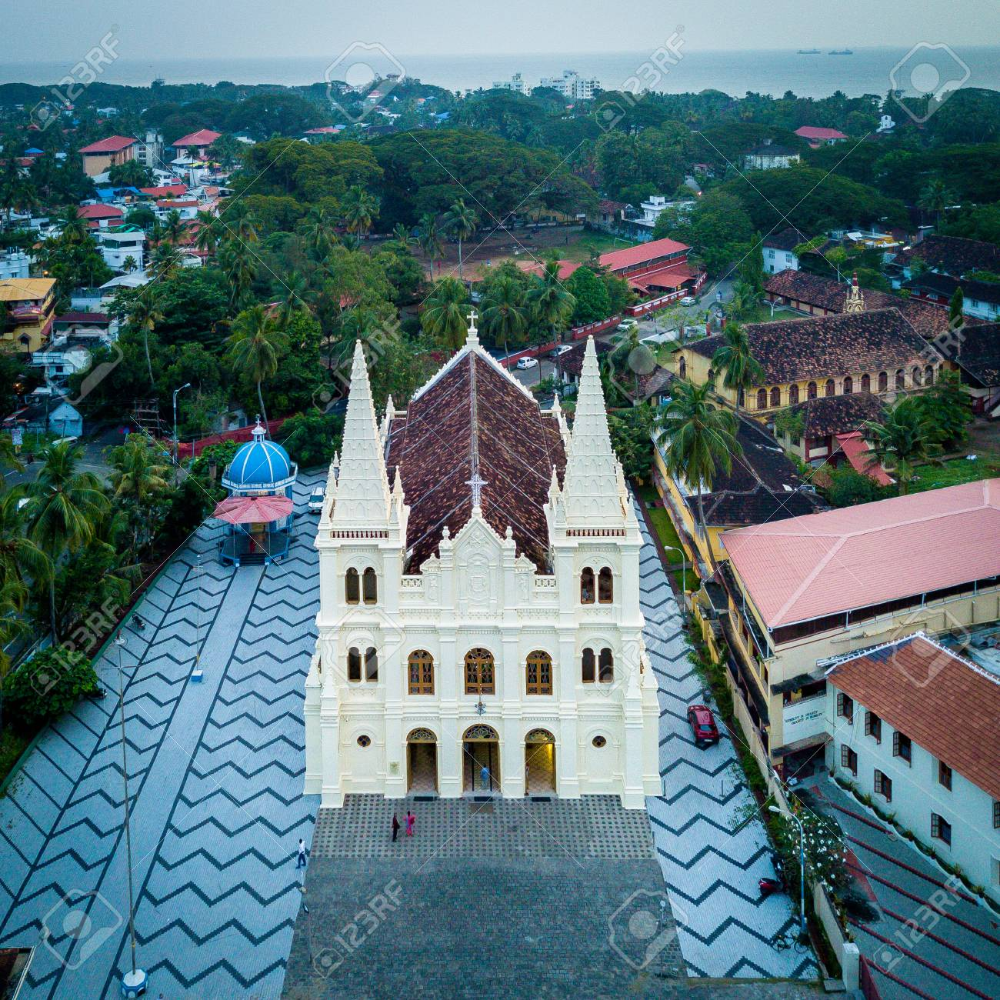

Santa Cruz Cathedral Basilica
Santa Cruz Cathedral Basilica, which is more than 500 years old, has an eventful past going back to the arrival of the Portuguese in 1500.
This church is counted as one of the heritage edifices of Kerala,is one of the finest and most impressive churches in India and is visited by tourists the whole year round.

Rating:
4.5/5 stars
Contact:
+91 484 2215799
Getting there:
Nearest railway station: Ernakulam about 12 km.
Nearest airport: Cochin International Airport, about 45 km.
Timings:
Monday to Saturday:
9 am–1 pm, 2:30–5:30 pm
Sunday:
10:30 am–1 pm
Address:
X67V+X48, Bastian St, Fort Nagar, Fort Kochi, Kochi, Kerala 682001